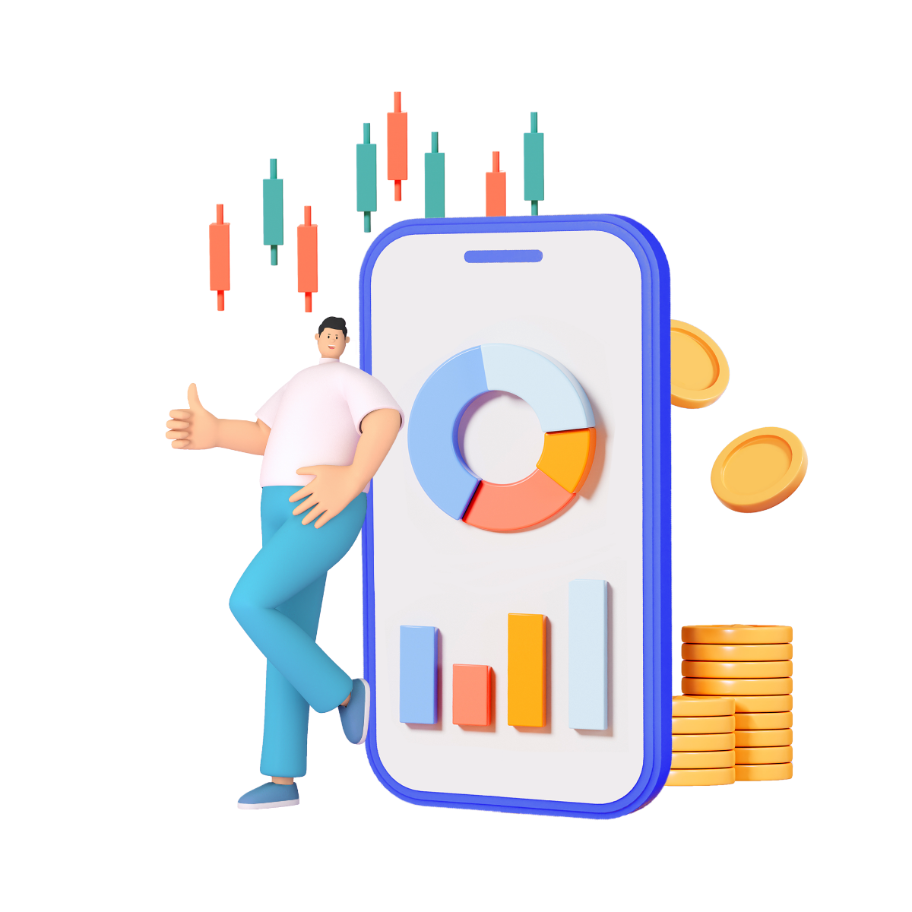

올타임 스탁론
언제 어디서나 간편한 주식 투자
DSR 제한 없이 올타임(All Time)으로!

2024-서울영등포-0012(대부업)
2024-서울영등포-0013(대부중개업)
언제 어디서나 간편한 주식 투자
DSR 제한 없이 올타임(All Time)으로!
대출금리: 연20%이내(연체이자율은 정상이자율+3%p이내, 최대 연20%이내) - 단, 2021년 7월 7일부터 체결되거나 갱신, 연장되는 계약에 한함. 해당 상품은 신용대출과 담보대출 상품으로 만 20세 이상 고객 대상으로 개인신용평점 등 신용도 및 당사 심사 기준에 따라 대출 가능 여부 및 이자율 산출. 이자는 매월 약정일에 부과하고 상품에 따라 원금자유상환(만기일시상환) 등의 방법으로 상환. 조기상환 조건 없음.
중개수수료를 요구하거나 받는 것은 불법입니다.
과도한 빚은 당신에게 큰 불행을 안겨줄 수 있습니다.
대출시 신용등급 또는 개인신용평점 하락으로 다른 금융거래가 제약 받을 수 있습니다.